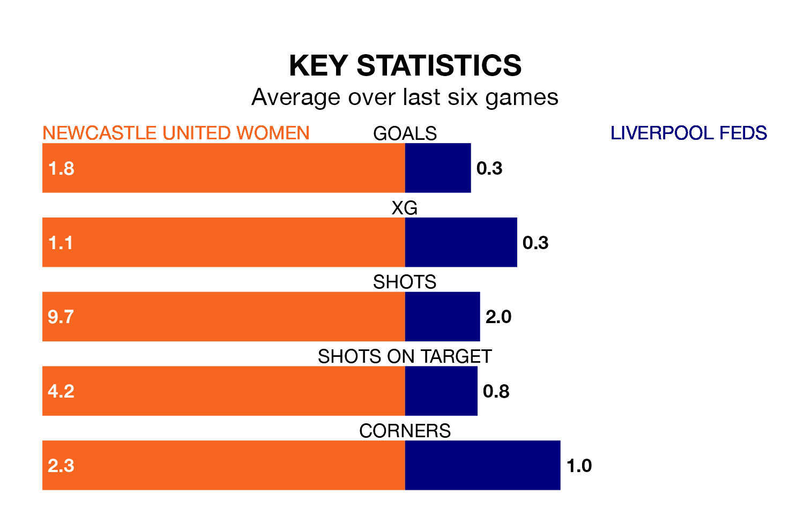

Newcastle United Women face Liverpool Feds on Sunday seeking to protect their formidable unbeaten run in the Women's National League Premier Division North.
Newcastle United are unbeaten in 18, with 13 wins and five draws, ahead of the 2pm kick-off.
They face a Liverpool Feds team who have won four and drawn six over the same number of games.
With 45 goals in 18 games so far this season, Newcastle United are the league's highest scorers with 2.5 goals per game. And they are conceding fewer than average, letting in seven goals at a rate of 0.4 per game.
Liverpool Feds, meanwhile, are below average scorers, with 1.3 goals per game, compared to a league average of 1.6. They have conceded 1.9 goals per game.
The hosts are top of the table after 18 games, of which they have won 13 and drawn five, earning 44 points.
The away side are seven places behind Newcastle United in eighth, with four wins and six draws putting them on 18 points.
In the last three years, Newcastle United and Liverpool Feds have played each other on three occasions. They won one each, and they drew once.
Their last meeting was on October 8, when Newcastle United won 4-0 away.
Newcastle United's last match was on March 17, a 3-2 win against Wolverhampton Wanderers Women.
Liverpool Feds lost 3-0 against Wolverhampton Wanderers Women last time out, on March 3.
Updated: 10:19 (UTC), 22/03/24